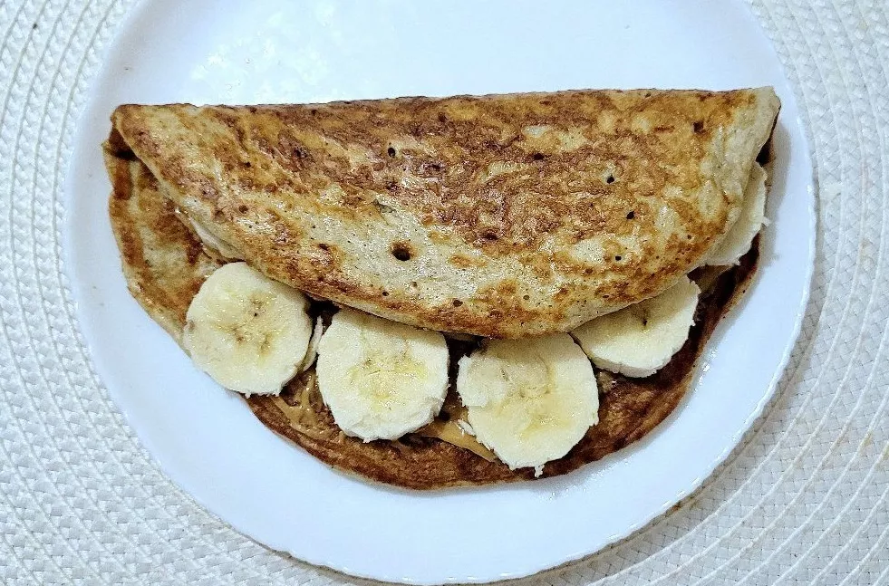
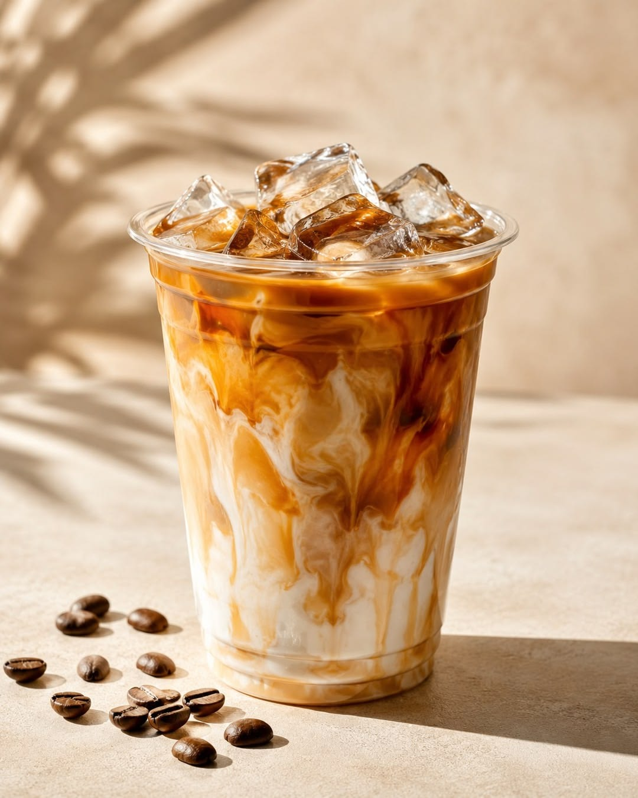
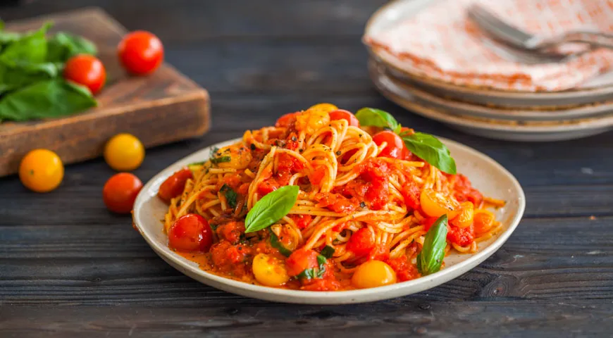
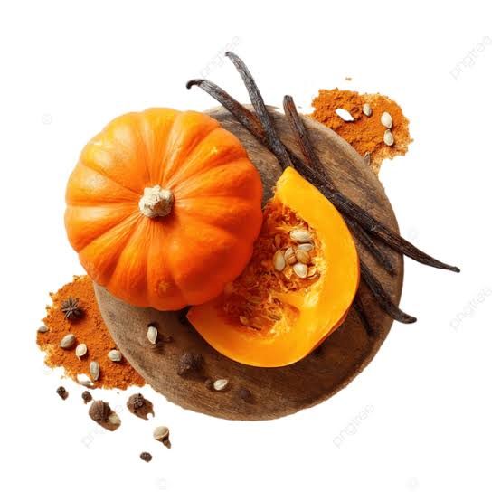
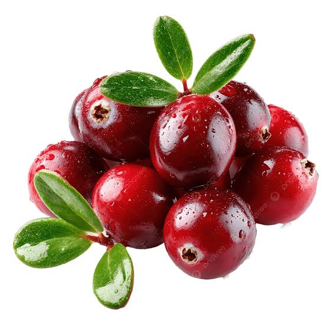
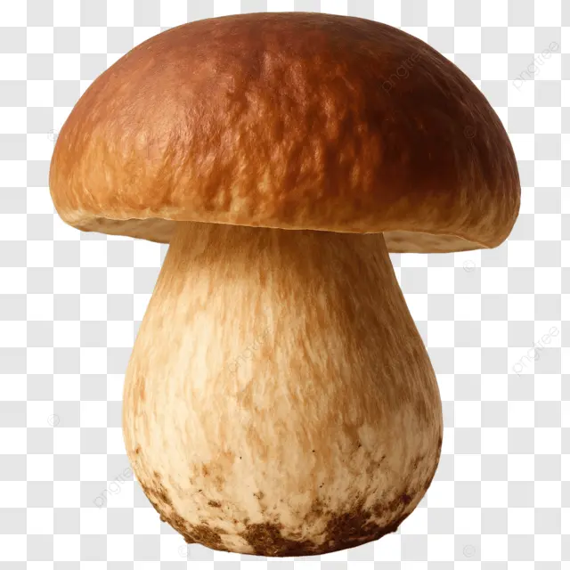
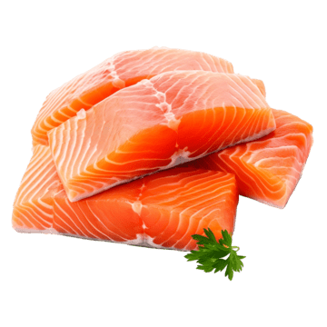
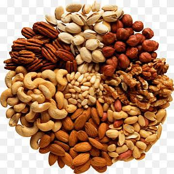
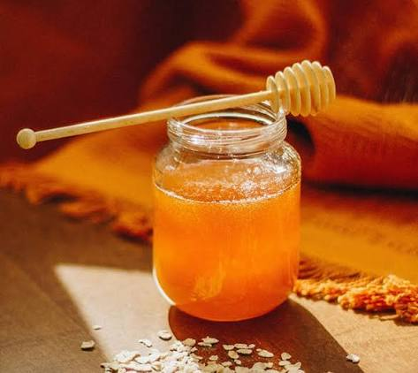

Навыки
- Адаптация традиционных рецептов кухонь мира для домашней готовки.
- Составление вкусного и сбалансированного меню на каждый день.
- Фуд-стилистика и выстраивание аппетитной композиции в кадре.
Проекты
- Овсяный блин с арахисовой пастой и бананом: быстрый, сытный и полезный завтрак за 10 минут.
- Кофеиновый шот кодера: авторский рецепт кофе с темным шоколадом, чтобы не уснуть за дебаггингом сложного алгоритма на C++.
- Итальянская паста Неаполитано: домашняя паста с соусом из свежих томатов и базиликом.
Фирменные блюда

Кофеиновый шот кодера

Паста Неаполитано
Ингредиенты недели

Тыква
Бета-каротин для зрения и кожи, много клетчатки при низкой калорийности.

Клюква
Витамин C и антиоксиданты, поддерживает иммунитет в сезон простуд.

Белые грибы
Растительный белок и витамины группы B, насыщенный вкус без мяса.

Лосось
Омега-3 и витамин D, лёгкий белок для восстановления после нагрузок.

Грецкий орех
Полезные жиры для работы мозга и сердца, долгое чувство сытости.

Мёд
Природный антисептик, заменяет сахар и смягчает горло при простуде.